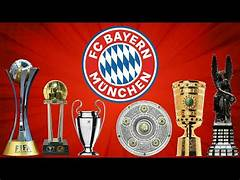
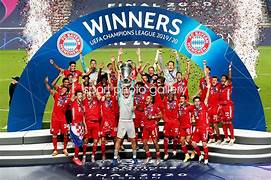
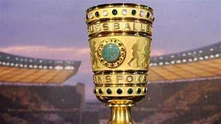
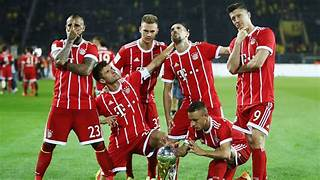
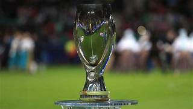

FC Bayern München Fan page

Germany's most crowned club

Fc bayern münchen is a notorious german soccer club figuring amount top 5 best soccer club of all time
Bayern München titles:
Bundesliga:


33 titles won, including 11 consecutive titles since 2013.
- Bundesliga – 1932
- Bundesliga – 1969
- Bundesliga – 1972
- Bundesliga – 1973
- Bundesliga – 1974
- Bundesliga – 1980
- Bundesliga – 1981
- Bundesliga – 1985
- Bundesliga – 1986
- Bundesliga – 1987
- Bundesliga – 1989
- Bundesliga – 1990
- Bundesliga – 1994
- Bundesliga – 1997
- Bundesliga – 1999
- Bundesliga – 2000
- Bundesliga – 2001
- Bundesliga – 2003
- Bundesliga – 2005
- Bundesliga – 2006
- Bundesliga – 2008
- Bundesliga – 2010
- Bundesliga – 2013
- Bundesliga – 2014
- Bundesliga – 2015
- Bundesliga – 2016
- Bundesliga – 2017
- Bundesliga – 2018
- Bundesliga – 2019
- Bundesliga – 2020
- Bundesliga – 2021
- Bundesliga – 2022
- Bundesliga – 2023
Champions league:


Winner 6 times, with a historic treble in 2020.
- UEFA Champions League – 1974
- UEFA Champions League – 1975
- UEFA Champions League – 1976
- UEFA Champions League – 2001
- UEFA Champions League – 2013
- UEFA Champions League – 2020
German Cup:


20 prestigious DFB-Pokal title won.
- DFB-Pokal – 1957
- DFB-Pokal – 1966
- DFB-Pokal – 1967
- DFB-Pokal – 1969
- DFB-Pokal – 1971
- DFB-Pokal – 1982
- DFB-Pokal – 1984
- DFB-Pokal – 1986
- DFB-Pokal – 1998
- DFB-Pokal – 2000
- DFB-Pokal – 2003
- DFB-Pokal – 2005
- DFB-Pokal – 2006
- DFB-Pokal – 2008
- DFB-Pokal – 2010
- DFB-Pokal – 2013
- DFB-Pokal – 2014
- DFB-Pokal – 2016
- DFB-Pokal – 2019
- DFB-Pokal – 2020
Intercontinental cup:
Two titles won under the previous edition and one under the new edition.
Old edition:

- Intercontinental Cup – 1976
- Intercontinental Cup – 2001
New edition:

- FIFA Club World Cup – 2020
UEFA supercup:


Two UEFA supercup won.
- UEFA Super Cup – 2013
- UEFA Super Cup – 2020
Join the Bayern München Fan Club